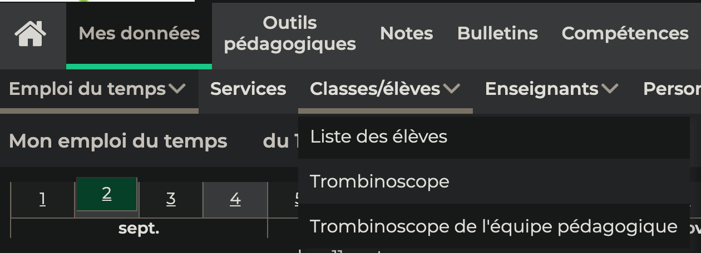
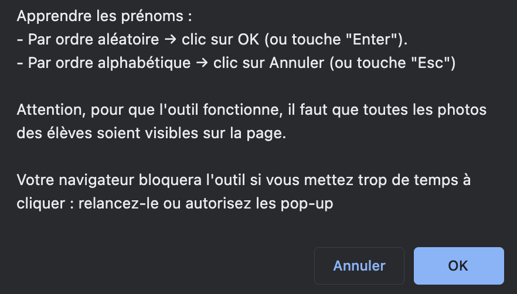
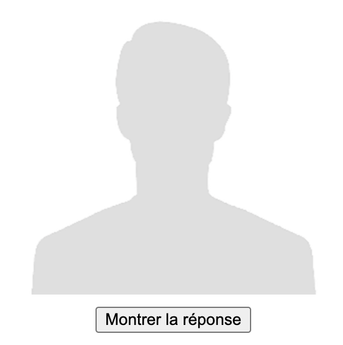
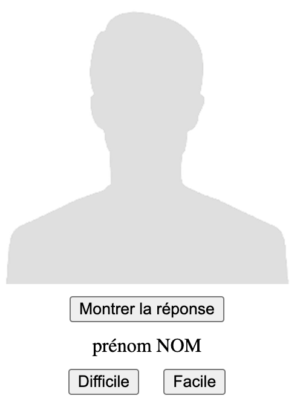
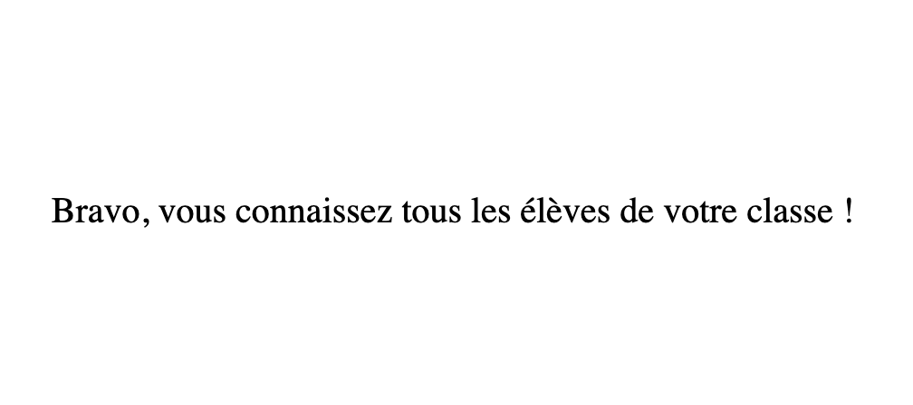

Il est essentiel de connaître très rapidement les prénoms de ses élèves.
Je propose ici un outil, Trombiquiz, qui permet à partir d’un trombinoscope en ligne de mémoriser plus facilement les prénoms de ses élèves.
Si on dispose des photos avant même le premier cours, on peut ainsi arriver en classe en connaissant déjà au moins une bonne partie des élèves, ce qui les surprend souvent de manière très positive !
Trombiquiz est un “bookmarklet” qui ne fonctionne que si vous le mettez dans un favori afin de pouvoir cliquer dessus quand vous serez sur un trombinoscope de vos élèves.
Trombiquiz fonctionne directement avec les applications suivantes :
Si vous utilisez un autre logiciel : vous pouvez me demander de l’intégrer à ce script (voir tout en bas de cette page).
Si vous disposez des fichiers des photos des élèves, vous pouvez aussi créer une page HTML qui fonctionnera avec Trombiquiz.
Attention, les logiciels ci-dessus peuvent évoluer. Si Trombiquiz ne fonctionne plus, il faudra soit simplement télécharger la nouvelle version, soit me l’indiquer pour que je fasse les changements nécessaires.
Affichez la barre de vos favoris et glisser-déposer le lien ci-dessous dans vos favoris :
Par exemple sur Pronote (version en ligne) :
Cliquez sur “Mes données” / “Classes/élèves” / “Trombinoscope”

Choisissez la classe et cliquez sur votre nouveau favori “Trombiquiz”
Trombiquiz ouvre un popup et vous propose d’apprendre soit les prénoms dans l’ordre aléatoire (ordre par défaut : cliquez sur OK ou appuyez sur Entrée), soit dans l’ordre alphabétique (cliquez sur Annuler ou appuyez sur Esc).
Attention : pour que Trombiquiz fonctionne, il faut qu'on puisse voir toutes les photos des élèves sur l'écran, et si vous mettez du temps à faire votre choix de l'ordre de présentation, votre navigateur va probablement bloquer l'ouverture de la page des photos (il faudra alors soit relancer Trombiquiz et répondre plus vite, soit accepter les popups).
Une page s’ouvre et Trombiquiz affiche une photo à la fois.

Quand vous pensez avoir retrouvé le prénom et le nom de l’élève, cliquez sur “Montrer la réponse”.

Si c’était facile, cliquez sur “Facile”. La photo de l’élève sera alors sortie de la liste.
Si c’était difficile, cliquez sur “Difficile”. La photo reste dans la liste.
Tant qu’il reste des photos dans la liste, l’outil parcourt la liste jusqu’à ce que vous ayez retrouvé tous les prénoms des élèves.

Trombiquiz est diffusé sous licence libre. N’hésitez pas à modifier le script pour qu’il fonctionne avec une autre application. Les sources sont sur la Forge des Communs Numériques Éducatifs.
Si vous avez un problème ou une demande d’évolution de l’outil, n’hésitez pas à me contacter, en utilisant de préférence les “tickets”. Vous pouvez sinon me contacter via les réseaux sociaux.